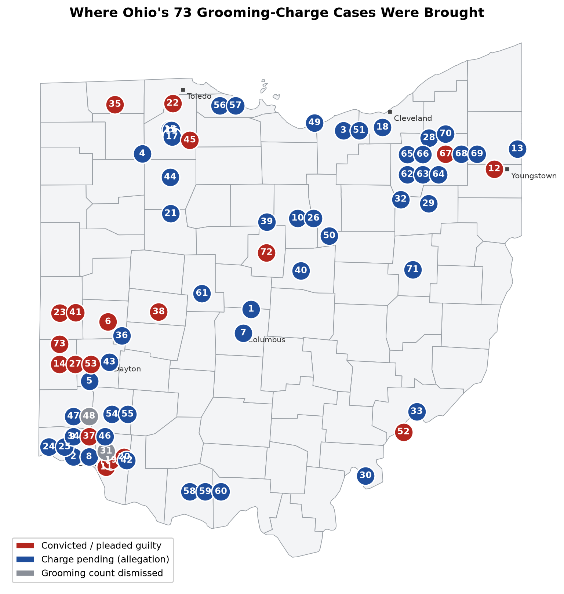
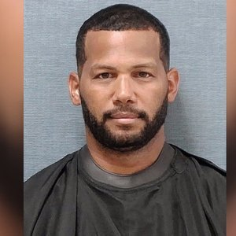
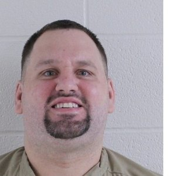
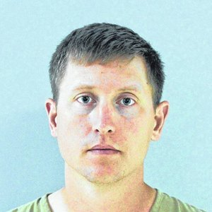

A public record, kept current by a crawler
Charged With Grooming in Ohio
Every Ohioan criminally charged under Ohio's new grooming law, ORC 2907.071, with a source on every case. Ohio made grooming its own crime with House Bill 322, signed January 8, 2025 and in force April 9, 2025. Before that date nobody could be charged with grooming by name, so this page counts only people carrying the actual charge.
53
Charged with grooming
13
Convicted or pleaded
50 of 53
Also face other child-abuse charges
38
Open cases, presumed innocent
Page built 2026-11-03 05:04 UTC. Last news sweep 2026-11-03 05:04 UTC. The crawler runs every six hours. Count as of the latest confirmed case.
Grooming stands alone in only 3 cases
In 50 of 53 cases the grooming count sits beside other child-abuse charges. The grooming statute is working as a door: the pattern-of-conduct charge gets investigators into a case that then surfaces the abuse itself. Grooming convictions matter. A grooming charge that delivers rape, sexual battery, or abuse-material convictions matters more, and that is the pattern so far.
| Companion charges beside grooming | Cases | Who |
|---|---|---|
| Hands-on abuse (rape, sexual battery, gross sexual imposition, unlawful sexual conduct) | 35 | Behanan, Telford, Walter, Vanwey, Gonzales, Barton, Helmer, West, Bingle, Rava, Losoya, Smetana, Hauke, Blair, Rivera-Alejandro, Rowland, Rowland, Carlton, Hair, Adams, Imler, Nichols, Merkle, III, Scheckells, Lambert, Getter, Travis, Boyd, McGhee, Bailey, Gay, Oliver, Simmons, Cowan |
| Exploitation (abuse material, pandering, importuning, trafficking, hidden camera) | 15 | Hartman, Grubbs, Vanderveen, Conley, Banovich, Barnes, Abke, Shuttleworth, McCoy, Moreno, Rodriguez, Arthur, Hammer, Foulke, Guthrie |
| Unspecified child sex felonies | 0 | |
| Grooming only | 3 | Kimball, Bakewell, Christiansen |
Resolved so far: Christopher Helmer (convicted, 9 years); James West (pleaded guilty, sentencing nov 2026); Paul Bingle (pleaded guilty to other counts, 13 to 17 years); James Russell Blair (convicted, 20 years); Brock Abke (convicted, 17 to 21 years); Justin D. Shuttleworth (pleaded guilty to grooming (misdemeanor), felonies dismissed, sentencing jun 2026); James R. Kimball (pleaded guilty to a reduced attempt count, 90 days (75 suspended), 2 years probation); Sean Rodriguez (convicted on a guilty plea; 5 years community control, tier i registration (aug 2026)); Josh Scheckells (convicted of grooming and two counts of gross sexual imposition, sent to prison sep 2026; rape and disseminating counts dismissed); Brandon T. Lambert (convicted on a guilty plea, 10 months prison, tier ii registration); Justin Travis (convicted, at least 4 years prison); Timothy Wayne Cowan (convicted of grooming, prison sentence from jul 2026 (odrc a859274)); Joseph Wade Guthrie (pleaded guilty to voyeurism and tampering (may 2026), 5 years community control; grooming not in the indictment).
Dismissed: Chevalier Adams Jr. (all six counts, including grooming, dismissed Oct 21, 2026 (docket B 2503790)); Arnold Gay (grooming and sexual battery counts dismissed Aug 14, 2026; community control on aggravated assault).
Where the cases were brought

Numbers match the case list. Red is convicted or pleaded guilty, on grooming or other counts. Blue is pending. Gray is dismissed. Leading counties: Hamilton (11), Wood (5), Clermont (4), Lorain (3), Preble (3). The cluster in southwest Ohio most likely reflects which prosecutors moved fastest to use the new statute, not where grooming happens.
The 53 cases
One sentence each. Click a name to open the source story. Every open case is an allegation; the person is presumed innocent unless and until proven guilty.
-
1
Scott Richard Hartman, 49 · Franklin County
Charged, pending + exploitation charged
Scott Richard Hartman, 49, a former senior executive at the Catholic Foundation of Ohio, was indicted in Franklin County in October 2026 on a grooming charge and child sexual abuse material counts after a sheriff's ICAC investigation, and has pleaded not guilty.
-
2
Keylan Behanan, 26 · Hamilton County
Charged, pending + hands-on abuse charged
Keylan Behanan, 26, a seasonal basketball coach at a Cincinnati charter school, was charged in March 2026 with grooming and two counts of sexual battery involving a minor.
-
3
Joshua Telford, 35 · Lorain County
Charged, pending + hands-on abuse charged
Joshua Telford, 35, of Cincinnati, was indicted in Lorain County in February 2026 on grooming and rape charges for allegedly traveling to abuse a 12-year-old, and is held without bond.
-
4
Christopher Walter, 52 · Henry County
Charged, pending + hands-on abuse charged
Christopher Walter, 52, a Deshler pastor, was indicted in Henry County in June 2026 on grooming and two counts of sexual battery, and has pleaded not guilty.
-
5
James Ryan Grubbs, 48 · Montgomery County
Charged, pending + exploitation charged
James Ryan Grubbs, 48, a former Valley View softball coach in Germantown, was indicted in Montgomery County in 2026 on a grooming count among more than 150 charges tied to alleged spy-camera recordings of girls.
-
6
Joshua A. Vanwey, 26 · Miami County
Charged, pending + hands-on abuse charged
Joshua A. Vanwey, 26, of Miami County, was indicted in July 2026 on grooming, child endangering, and unlawful sexual conduct charges, and has pleaded not guilty.
-
7
Diego Montoya Gonzales · Franklin County
Charged, pending + hands-on abuse charged
Diego Montoya Gonzales was indicted in Franklin County in August 2026 on grooming, attempted rape, and child enticement charges tied to alleged TikTok contact with a minor, and has pleaded not guilty.
-
8
Steven Barton, 43 · Hamilton County
Charged, pending + hands-on abuse charged
Steven Barton, 43, an assistant principal at Cincinnati's Aiken High School, was indicted in 2026 on six counts of sexual battery and two counts of grooming.
-
9
Diego Vanderveen, 19 · Hamilton County
Charged, pending + exploitation charged
Diego Vanderveen, 19, a former Milford High School custodian, was indicted in Hamilton County in September 2026 on grooming and related charges for allegedly posing as a teenager on Snapchat.
-
10
Joshua A. Conley, 39 · Richland County
Charged, pending + exploitation charged
Joshua A. Conley, 39, of Richland County, was indicted in September 2026 on grooming alongside human trafficking and prostitution-related counts.
-
11
Christopher Helmer, 18 · Clermont County
Convicted + hands-on abuse charged
Christopher Helmer, 18, a former Clermont County daycare worker, pleaded guilty to grooming and related charges and was sentenced to nine years in September 2026.
-
12
James West, 72 · Mahoning County
Pleaded guilty + hands-on abuse charged
James West, 72, of Austintown, pleaded guilty in 2026 to sexual battery and grooming, with sentencing set for November 2026.
-
13
Paul Banovich Jr., 66 · Trumbull County
Charged, pending + exploitation charged
Paul Banovich Jr., 66, of Brookfield, was indicted in Trumbull County in April 2026 on two counts of grooming and two counts of importuning.
-
14
Paul Bingle, 49 · Preble County
Plea on other counts + hands-on abuse charged
Paul Bingle, 49, a Preble County teacher, was indicted on four counts of grooming but pleaded guilty to sexual battery and unlawful sexual conduct after the grooming counts were dropped, receiving thirteen to seventeen years.
-
15
Mark H. Barnes, 40 · Wood County
Charged, pending + exploitation charged
Mark H. Barnes, 40, of North Ridgeville, was indicted in Wood County in October 2025 on attempted grooming and related counts in a police sting.
-
16
Matthew Rava, 33 · Wood County
Charged, pending + hands-on abuse charged
Matthew Rava, 33, of Bowling Green, was indicted in Wood County in July 2026 on grooming plus three counts of rape and five counts of sexual battery, and was released on bond.
-
17
Pablo Losoya, 41 · Wood County
Charged, pending + hands-on abuse charged
Pablo Losoya, 41, of Portage, was indicted in Wood County in July 2026 on grooming alongside unlawful sexual conduct, pandering, and drug counts, and was held on bond.
-
18
Steven Smetana, 53 · Cuyahoga County
Charged, pending + hands-on abuse charged
Steven Smetana, 53, of Claridon Township in Geauga County, was indicted in Cuyahoga County in May 2026 on grooming plus five counts of rape and gross sexual imposition.
-
19
Richard Todd Hauke, 57 · Clermont County
Charged, pending + hands-on abuse charged
Richard Todd Hauke, 57, of Clermont County, was indicted in November 2025 on a 40-count indictment including grooming, rape, and gross sexual imposition involving a child under 13, and is jailed.
-
20
James Russell Blair, 40 · Clermont County
Convicted + hands-on abuse charged
James Russell Blair, 40, of Jackson Township in Clermont County, was indicted June 24, 2025, the earliest grooming charge found in Ohio, on 44 counts including two grooming counts, and pleaded guilty, receiving 20 years.
-
21
Carlos Rivera-Alejandro, 29 · Hardin County
Charged, pending + hands-on abuse charged
Carlos Rivera-Alejandro, 29, of Dunkirk in Hardin County, was indicted in July 2026 on a 48-count indictment including grooming, rape, and sexual battery, and is held on $750,000 bond.
-
22
Brock Abke, 31 · Wood County
Convicted + exploitation charged
Brock Abke, 31, of Perrysburg, a former Wood County Fair Board director, was indicted in November 2025 over three 4-H minors, pleaded guilty in May 2026 to grooming and pandering counts, and was sentenced July 9, 2026 to 17 to 21 years.
-
23
Justin D. Shuttleworth · Darke County
Pleaded guilty + exploitation charged
Justin D. Shuttleworth was indicted in Darke County on three nudity-material felonies and a grooming count for conduct from August to November 2025, and on June 8, 2026 pleaded guilty to grooming, a misdemeanor, with the felonies dismissed.
-
24
Michael Rowland, 53 · Hamilton County
Charged, pending + hands-on abuse charged
Michael Rowland, 53, of Whitewater Township, was arrested in June 2026 and is accused with his wife of grooming and sexually assaulting a 14-year-old; he faces rape, sexual battery, unlawful sexual conduct, importuning and grooming charges in Hamilton County.
-
25
Amanda Rowland, 41 · Hamilton County
Charged, pending + hands-on abuse charged
Amanda Rowland, 41, of Whitewater Township, was arrested in June 2026 and is accused with her husband of grooming and sexually assaulting a 14-year-old; she faces rape, sexual battery, unlawful sexual conduct, importuning and grooming charges in Hamilton County.
-
26
Dustin Eugene McCoy, 38 · Richland County
Charged, pending + exploitation charged
Dustin Eugene McCoy, 38, of Akron, was indicted in Richland County in June 2026 on grooming, pandering, nudity-material and dissemination counts after allegedly traveling to Mansfield around Feb. 7 to meet a 15-year-old he contacted on social media.
-
27
James R. Kimball, 44 · Preble County
Plea on other counts grooming only
James R. Kimball, 44, a Twin Valley South bus driver, was charged in Eaton Municipal Court in October 2025 with grooming a 16-year-old student, pleaded guilty to a reduced misdemeanor attempt, and was sentenced in June 2026 to 90 days, 75 suspended.
-
28
Carlos L. Moreno, 40 · Portage County
Charged, pending + exploitation charged
Carlos L. Moreno, 40, of Aurora, was indicted in Portage County in May 2026 on five counts including grooming, importuning and nudity-material charges for allegedly texting girls as young as 10 for sexual photos, and has pleaded not guilty.
-
29

Michael Carlton · Stark County
Charged, pending + hands-on abuse charged
Michael Carlton, a former youth minister at The STAR in the East congregation in Plain Township, was charged in Stark County in September 2026 with multiple grooming counts plus sexual imposition, assault and unlawful restraint involving three young people.
-
30
Jonathon Hair, 47 · Meigs County
Charged, pending + hands-on abuse charged
Jonathon Hair, 47, of Racine, was charged in November 2025 by the Meigs County Sheriff's Office with multiple counts of rape of a minor and grooming violations, and was held at Southeast Regional Jail with more charges pending.
-
31
Chevalier Adams Jr., 39 · Hamilton County
Grooming count dismissed + hands-on abuse charged
Chevalier Adams Jr., 39, of Cincinnati, was indicted in Hamilton County in July 2025 on grooming, three counts of rape, kidnapping, and importuning; all six counts were dismissed on October 21, 2026.
-
32
Stephen Imler, 29 · Stark County
Charged, pending + hands-on abuse charged
Stephen Imler, 29, of Canal Fulton, a former high school band director, was indicted in Stark County in October 2026 on one count of grooming and three counts of sexual battery, and has pleaded not guilty.
-
33
Jordan Matthew Nichols, 36 · Washington County
Charged, pending + hands-on abuse charged
Jordan Matthew Nichols, 36, of Marietta, was indicted in Washington County in October 2026 on three felony grooming counts, three counts of gross sexual imposition, six pandering counts, and two counts of public indecency.
-
34
Hunter Merkle, 25 · Hamilton County
Charged, pending + hands-on abuse charged
Hunter Merkle, 25, was indicted in Hamilton County in August 2026 on one count of grooming, five counts of unlawful sexual conduct with a minor, and two counts of illegal use of a minor in nudity-oriented material (docket B 2602888).
-
35
Sean Rodriguez, 27 · Fulton County
Convicted + exploitation charged
Sean Rodriguez, 27, of Wauseon, pleaded guilty in Fulton County to grooming and pandering obscenity involving a minor and was sentenced on August 13, 2026, to five years of community control.
-
36
Kenneth E. Holycross III, 41 · Miami County
Charged, pending + hands-on abuse charged
Kenneth E. Holycross III, 41, of Bethel Township, was indicted in Miami County in 2026 on two counts of grooming and dozens of other counts including rape, sexual battery, and gross sexual imposition, for alleged conduct between November 2025 and May 2026.
-
37
Josh Scheckells, 35 · Hamilton County
Convicted + hands-on abuse charged
Josh Scheckells, 35, was indicted in Hamilton County in May 2026 and in September 2026 was sentenced to prison on grooming and two counts of gross sexual imposition; the rape and disseminating counts were dismissed (docket B 2601819).
-
38
Brandon T. Lambert, 23 · Champaign County
Convicted + hands-on abuse charged
Brandon T. Lambert, 23, of Springfield, was indicted in Champaign County in May 2026, pleaded guilty to grooming and unlawful sexual conduct with a minor, and was sentenced on August 31, 2026, to 10 months in prison.
-
39
Kiel John Getter, 41 · Crawford County
Charged, pending + hands-on abuse charged
Kiel John Getter, 41, of Galion, was indicted in Crawford County in 2026 on sexual battery, two counts of tampering with evidence, obstruction of justice, and a misdemeanor grooming count involving a minor.
-
40
Brian E. Bakewell · Knox County
Charged, pending grooming only
Brian E. Bakewell was on the Mount Vernon Municipal Court docket in Knox County the week of October 12, 2026, on a single count of grooming under ORC 2907.071(B)(1).
-
41
Justin Travis, 39 · Darke County
Convicted + hands-on abuse charged
Justin Travis, 39, a former Greenville High School staff member, was convicted in Darke County of grooming, two counts of sexual battery, and two counts of unlawful sexual conduct with a minor, and sentenced to at least four years in prison.
-
42
Landerous Boyd · Clermont County
Charged, pending + hands-on abuse charged
Landerous Boyd was indicted in Clermont County in March 2026 on one count of grooming, twelve counts of gross sexual imposition, three counts of rape, importuning, and four counts of intimidation of a victim or witness.
-
43
Nolan K. Arthur, 25 · Montgomery County
Charged, pending + exploitation charged
Nolan K. Arthur, 25, was arrested in March 2026 in a Montgomery County human-trafficking task force operation and booked on a first-degree misdemeanor grooming charge and soliciting.
-
44
Stephen M. Christiansen, 30 · Hancock County
Charged, pending grooming only
Stephen M. Christiansen was charged in Findlay Municipal Court in Hancock County in February 2026 with a single first-degree misdemeanor grooming count and has pleaded not guilty (case 26CRB00168).
-
45
Robert Joseph Hammer, 60 · Wood County
Charged, pending + exploitation charged
Robert Joseph Hammer, 60, of Wayne, was indicted in Wood County on February 4, 2026, on a misdemeanor grooming count, disseminating matter harmful to juveniles, pandering obscenity, and having weapons while under disability.
-
46
Carlton McGhee, 33 · Hamilton County
Charged, pending + hands-on abuse charged
Carlton McGhee was indicted in Hamilton County in January 2026 on one count of grooming and three counts of rape (docket B 2600372).
-
47
Jacquez Bailey, 26 · Hamilton County
Charged, pending + hands-on abuse charged
Jacquez Bailey, 26, was indicted in Hamilton County in December 2025 on one count of grooming and two counts of gross sexual imposition (docket B 2506826).
-
48
Arnold Gay, 43 · Hamilton County
Grooming count dismissed + hands-on abuse charged
Arnold Gay, 43, was indicted in Hamilton County in December 2025 on grooming, sexual battery, and aggravated assault; the grooming and sexual battery counts were dismissed in August 2026 (docket B 2506673).
-
49
Andrew S. Oliver, 33 · Lorain County
Charged, pending + hands-on abuse charged
Andrew S. Oliver, 33, of Vermilion, was charged in Lorain County in 2025 with grooming, gross sexual imposition, and pandering obscenity involving a minor, and was bound over to the Court of Common Pleas.
-
50

Iann C. Simmons, 34 · Ashland County
Charged, pending + hands-on abuse charged
Iann C. Simmons, 34, was indicted in Ashland County in October 2025 on two felony grooming counts, three counts of gross sexual imposition, and disseminating matter harmful to juveniles, the first grooming indictment in that county.
-
51
Zachary Foulke, 37 · Lorain County
Charged, pending + exploitation charged
Zachary Foulke, 37, of Springfield, was indicted in Lorain County Common Pleas Court in September 2025 on 22 counts of importuning and one misdemeanor count of grooming.
-
52
Timothy Wayne Cowan, 54 · Washington County
Convicted + hands-on abuse charged
Timothy Wayne Cowan, 54, of Belpre, was indicted in Washington County in August 2025 on gross sexual imposition and a felony grooming count, and is serving a prison sentence on the grooming conviction.
-
53

Joseph Wade Guthrie, 36 · Preble County
Plea on other counts + exploitation charged
Joseph Wade Guthrie, 36, a Gasper Township trustee, was charged in Preble County in July 2025 with misdemeanor grooming, illegal use of a minor in nudity-oriented material, tampering, and voyeurism; he later pleaded guilty to voyeurism and tampering.
Queued: found, not yet confirmed
Stories the crawler found that pair grooming with a charge in Ohio but could not yet be confirmed: the source was unreadable, the name or county was missing, or the model and the checks did not agree. They are not counted. Each sweep reads them again and adds any that pass.
- Nothing new since the last sweep.
Grooming described, not charged
The word appears in coverage, but no formal grooming count is confirmed, usually because the conduct predates the April 2025 law or the case was charged under other statutes. Not counted.
- Chad Essert, 44, Clermont County: 70 counts of sexual battery and unlawful sexual conduct. Conduct 2005 to 2010, before the law existed. Grooming is described by prosecutors, not charged.
- Jordan Wheeler, 26, Franklin County: Pandering sexually oriented material. Arrested April 2, 2025, one week before the law took effect. Grooming described his alleged intent, not a charge.
- Thomas Andrew Rich, 29, Wood County: Gross sexual imposition, importuning, disseminating. No grooming count.
- Mark A. Chandler, 37, Brown County: Federal sexual exploitation and enticement. Federal case. Groomed is narrative, not an Ohio grooming count.
- Gary Thomas Keesee Jr., , Knox County: 27 counts of rape, sexual imposition, and unlawful sexual conduct. No grooming count. Conduct dates to about 2002 to 2006, before the law. Grooming is narrative in coverage.
- Michael Waldron, 56, Warren County: 12 felony counts of gross sexual imposition, importuning, public indecency. Coverage says "grooming-related offenses"; no source names a formal ORC 2907.071 count.
The law is being applied backwards
No one was charged in the gap between signing and the effective date. But prosecutors have charged grooming for conduct that predates the statute: James Blair's grooming counts cover abuse reportedly beginning in 2018. Charging a brand-new offense for earlier conduct raises an ex post facto problem under both the Ohio and United States Constitutions. No defense challenge or appellate ruling has tested it yet.
The Bethel police chief shows the line. Chad Essert was indicted on 70 felony counts in June 2026 and prosecutors say he began grooming the alleged victim at age 12, yet he was not charged with grooming: the alleged conduct ran from 2005 to 2010, fifteen years before the statute existed.
How this page is kept
There is no official statewide tally of grooming charges, so this is a case-by-case sweep of news, prosecutor releases, and court dockets. Every six hours a crawler searches news feeds for Ohio stories pairing grooming with a charge and drops anything already listed. A Claude model reads each new story, and the case is added only when the model and a set of fixed checks agree: a named person, an Ohio court, a formal grooming count under ORC 2907.071 (charged, indicted, pleaded, or convicted), and a reputable source that says so. Anything less stays in the queue above. Big multi-agency stings (Operation Next Door, Operation Guardians' Watch, Operation Lifeboat) produced solicitation and importuning counts, not grooming, and are listed only where a grooming count appears.
Corrections and additions: contact Chris Graham. The research brief behind this page is a Fugio Consulting document.